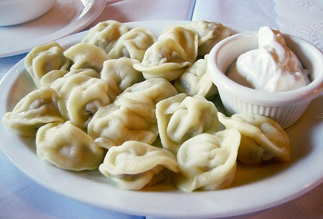

This recipe is adapted from "Oleg's Flavor Factory" written by Olga K, and found here

Photo by: Eugene Kim, CC BY 2.0 https://creativecommons.org/licenses/by/2.0, via Wikimedia Commons
Ingredients
Dough
2 cups water
1 cup or 8 oz butter
1 tsp salt
2 large eggs
6 cups all purpose flour
Meat
3 lbs ground meat (I prefer pork or chicken)
2 onions (finely chopped)
4 garlic cloves (minced)
1 1/2 Tablespoons butter
2 1/2 – 3 teaspoons salt
2 teaspoons ground black pepper
1/2 – 1 Tablespoon dry herbs and spices, optional
1/4 – 1/3 cup water
Directions
Dough
In a medium pot, bring the water and butter to a boil.
Add the salt and two cups of flour all at once. Mix vigorously with a wooden spoon.
Take off the heat, cool slightly and add the eggs.
Add the remaining four cups of flour. Mix until combined.
Cover, and set aside, letting the dough rest for about 20 minutes.
Meat
Melt butter in a skillet. Add the onions and cook for about 5-7 min, until tender and starting to turn slightly golden. Add garlic and cook for about 30 seconds. Cool slightly.
In a large bowl, combine the ground meat, cooked onions and garlic, salt, pepper, herbs and spices and water. Mix to combine.
Assembly
Roll out the dough into a thin sheet. (While assembling the dumplings, keep the remaining dough covered, so it stays soft and pliable, protecting it from drying out.)
Cut out 3 inch circles, using a biscuit cutter or a cup. Place 1 heaping Tablespoon of meat filling in the center. Fold the dough over in half, sealing the edges together.
When sealing the edges together, make sure to squeeze out all the air, so the pelmeni don’t burst open while cooking.
Take hold of the corners and pinch them together, creating the classic pelmeni shape.
Cooking
Add 1 bay leaf, and some peppercorns to a pot of water. Season with salt and bring to a boil.
Add the pelmeni, (no need to thaw if using frozen Pelmeni). Cook just until the pelmeni float to the top, for about 5 min. Make sure not to overcook them.
Drain the water or use some of it and serve it with the pelmeni as a broth.
Serve with sour cream. Other garnish options are melted butter, sour cream, vinegar, fresh herbs, sauteed onions and bacon.